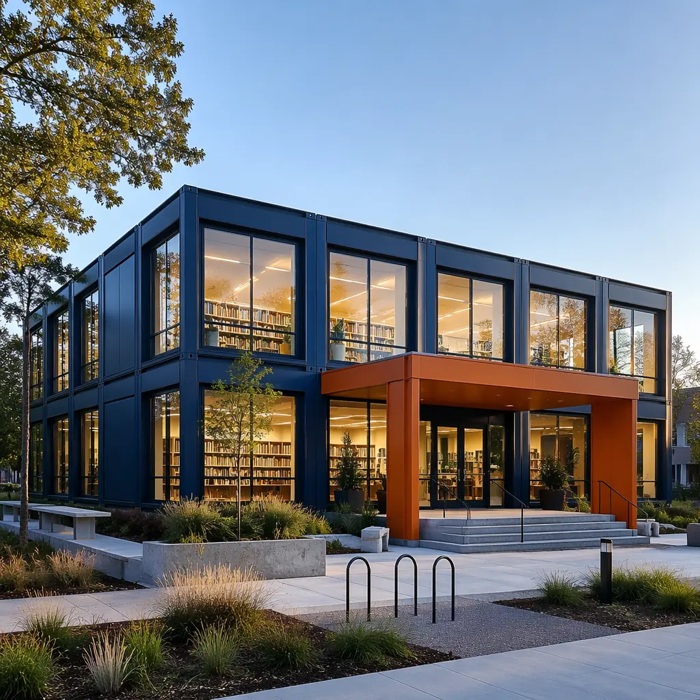
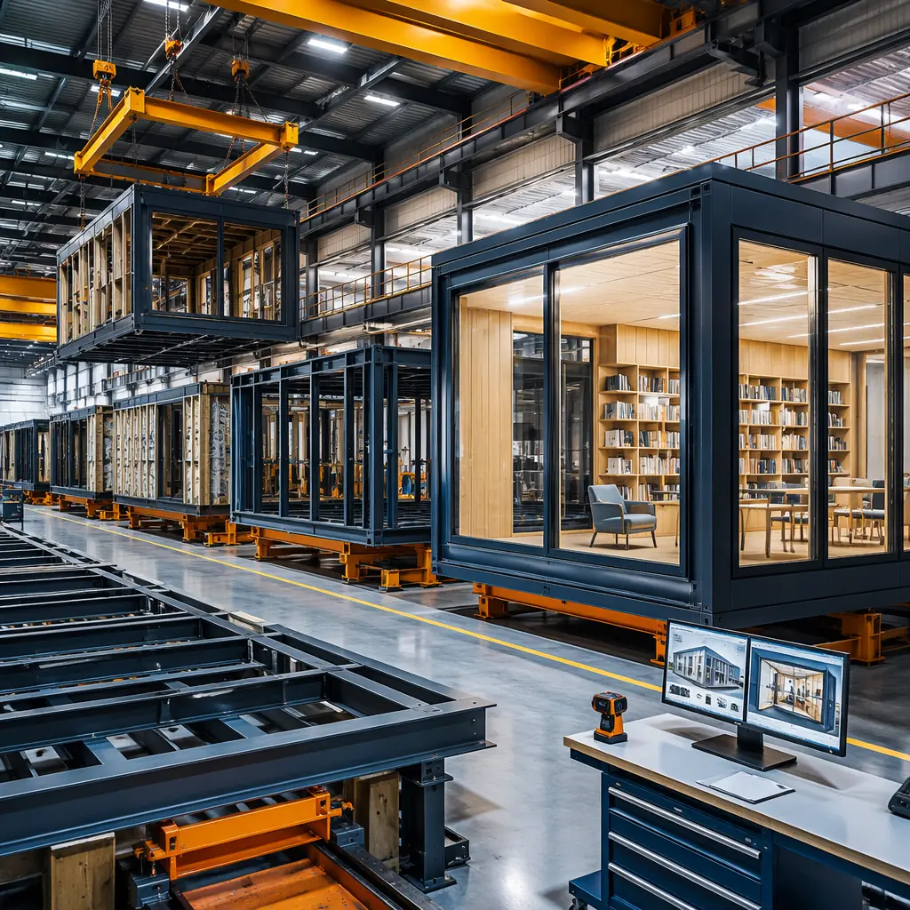
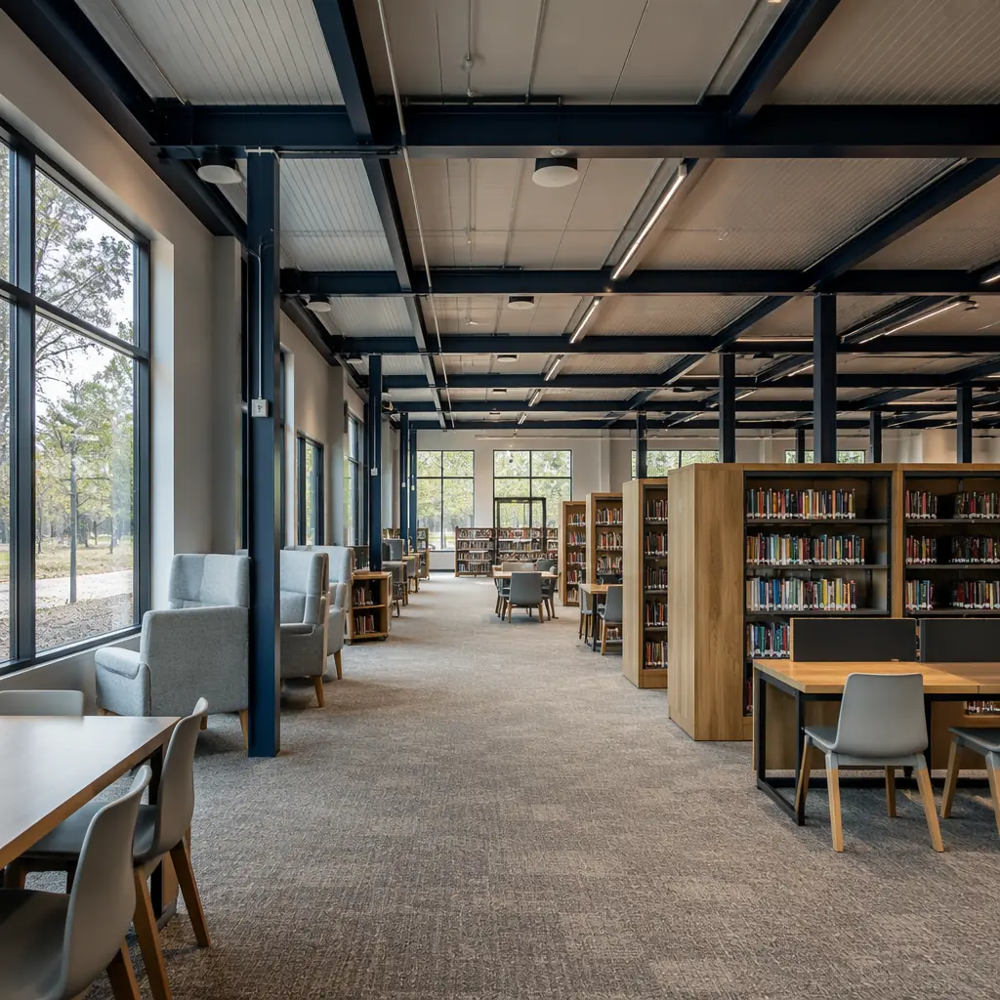

Public libraries are the most democratic institutions in any community — free access to knowledge, technology, and gathering space for every citizen regardless of income, age, or background. Yet the process of building them is anything but democratic. A typical municipal library project takes 3–5 years from bond approval to grand opening, consumes $450–$650 per square foot in total project costs, and burns through political goodwill during construction delays that leave communities without library services for years. Modular prefabricated construction is changing this equation: delivering complete library buildings 40% faster than traditional methods, at $320–$480 per square foot, with the same architectural quality using modular building customization that municipalities expect from civic landmarks. This article examines the engineering, spatial programming, acoustic design, and sustainability strategies that make modular construction uniquely suited to modern public libraries.

Why Municipalities Are Choosing Modular for Library Construction
The financial case for modular library construction begins with a hard number: the average US public library construction project costs $527 per square foot For a deeper look, our modular vs. traditional construction guide covers the details. (ALA Library Construction Survey, 2024), with 65% of projects exceeding their original budget by 15% or more. Municipalities face compounding pressures — bond measures that lose value to inflation during multi-year construction timelines, interim library service costs ($120,000–$350,000/year for temporary facilities), and the political cost of ribbon-cuttings that happen after elected officials have left office.
Modular construction addresses the library-specific cost drivers directly. Site work and foundation construction run concurrently with module fabrication For a deeper look, our bim-to-factory digital workflow guide covers the details. — a library's foundation, utilities, and site improvements proceed on-site while its reading rooms, stacks areas, and community spaces are being built in the factory. For a 15,000-square-foot branch library, this concurrent schedule compresses total project duration from 18–24 months (traditional) to 10–14 months (modular). The interim-service savings alone — $180,000–$525,000 depending on project duration — often cover the municipality's contingency fund requirement.
Beyond speed, modular construction solves the quality-consistency challenge that plagues library construction. Libraries contain dozens of specialized spaces — acoustically isolated reading rooms, humidity-controlled archives, high-power-density computer labs — each with distinct MEP requirements. Factory production ensures that every room's mechanical rough-in, electrical infrastructure, and acoustic treatment is installed to specification under controlled conditions, with QC documentation that municipal building departments increasingly prefer over field-inspection-dependent site-built construction. Modular construction costs per square foot become more predictable because factory labor productivity — 30–40% higher than field labor for equivalent scopes — eliminates the weather delays, trade stacking inefficiencies, and rework cycles that inflate traditional library project budgets by 8–12% on average.

Engineering Open-Span Reading Rooms: The Structural Core of Modular Libraries
The defining spatial requirement of any library is the open-span reading room — a column-free space where sightlines extend 60–100 feet, natural light penetrates deep into the floor plate, and the structural system disappears from the patron's experience. Traditional modular construction — with its 12–14-foot module widths dictated by transport constraints — seems at odds with this requirement. Modern modular library engineering resolves this through hybrid steel frame systems For a deeper look, our modular construction permitting & zoning… guide covers the details. that combine transportable perimeter modules with site-installed long-span roof trusses.
The engineering approach works in three coordinated layers. First, the perimeter modules — typically 12 ft wide × 40–60 ft long — carry the building's vertical loads at the exterior walls: stacks areas, study carrels, staff offices, and mechanical rooms are housed within these factory-finished modules, which arrive on-site with millwork, shelving, lighting, and data infrastructure fully installed. Second, the central reading room is created by omitting interior modules and spanning the gap with site-installed steel trusses or glulam beams — typically 40–60 ft clear spans — supported on the interior faces of the perimeter module walls. Third, the roof assembly For a deeper look, our modular construction financing — loans,… guide covers the details. — insulated metal decking with integrated skylight curbs — is installed over the trusses, creating a light-filled volume that feels indistinguishable from a site-built library.
This hybrid approach preserves modular construction's speed advantage where it matters most — 70–80% of the building's floor area and 90% of its MEP infrastructure is factory-installed within the perimeter modules — while delivering the architectural drama of a column-free reading room that library patrons and municipal stakeholders expect from a civic building. For branch libraries under 10,000 square feet, single-story configurations with perimeter modules and a central skylit reading room achieve complete factory fabrication rates exceeding 85% of total building volume. Modular K-12 school construction uses the same hybrid open-span approach for gymnasiums and cafeterias.
Acoustic Design: Engineering Quiet in a Modular Building
Libraries present the most demanding acoustic requirements of any community building type. A reading room requires background noise levels below 35 dBA (NC-30) — quieter than a typical office, approaching recording studio standards. Simultaneously, children's areas, maker spaces with 3D printers and laser cutters, and community meeting rooms hosting events generate noise levels that would violate reading room standards if they were in the same building without proper isolation. The acoustic challenge is compounded by modular construction's defining characteristic: module-to-module joints that create potential flanking transmission paths for sound.
MODURA's library acoustic package addresses these challenges through a four-layer strategy tested to achieve STC 55–62 ratings at module interfaces — performance that equals or exceeds site-built library construction:
- Module-joint acoustic isolation. The 2-inch gap between adjacent modules at floor, wall, and ceiling planes is treated as an acoustic break rather than a gap to be sealed. Each module face at the joint receives two layers of 5/8-inch Type X gypsum board on resilient channels (providing a 1/2-inch decoupled air gap), with the inter-module cavity filled with 3.5-inch mineral wool insulation (4 pcf density). A continuous acoustic sealant bead — applied in the factory at module edges, verified with smoke-pencil testing before modules leave the factory floor — eliminates the air-leakage paths that degrade field-installed acoustic treatments by 10–15 STC points.
- Zoned noise management. Libraries are acoustically zoned during programming: Quiet Zone (reading rooms, study areas: NC-30 target), Moderate Zone (stacks, circulation desks: NC-35 target), and Active Zone (children's areas, maker spaces, meeting rooms: NC-40 target with containment). Walls between zones achieve STC 55 minimum through double-stud construction with acoustic insulation — assembled and tested in the factory. Modular building acoustics and soundproofing covers the full range of acoustic treatments applicable to library construction.
- HVAC noise control. Reading room HVAC systems are designed for NC-25 maximum — stricter than the room's NC-30 target, ensuring mechanical noise never masks the acoustic treatment's performance. Factory-installed ductwork includes internal acoustic lining for the first 15 feet of each branch run, and air handler units are mounted on spring isolators with neoprene pads at structural connections. All MEP penetrations through acoustic walls receive factory-installed firestop and acoustic sealant systems — eliminating the field-coordination gap between the mechanical contractor and the acoustic consultant that creates post-occupancy noise complaints in 30% of traditional library projects.
- Reverberation control. Reading rooms achieve RT60 reverberation times of 0.6–0.8 seconds — optimal for speech intelligibility without the dead acoustic character that makes patrons feel uncomfortable speaking at normal volumes. Factory-installed acoustic ceiling panels (2-inch thick, NRC 0.85 minimum), perforated wood wall panels with acoustic backing on 25% of wall surfaces, and carpet tile flooring on isolated underlayment work together as a coordinated system rather than field-specified components whose combined performance is never tested until after occupancy.

Specialized Spaces: Programming the Modern Modular Library
Today's public library is not a book warehouse — it is a community hub with functionally distinct zones that would have been separate municipal buildings a generation ago. Modular construction's factory-based fit-out is particularly well-suited to these specialized spaces, where MEP density, technology infrastructure, and material finish requirements vary dramatically from room to room. The table below summarizes the key library program spaces and their modular configuration requirements:
| Library Space | Module Configuration | Key Requirements | Modular Advantage |
|---|---|---|---|
| Children's Area | 12×40 ft modules, 1–2 per branch, open to reading room or acoustically separated | Durable finishes, flexible furniture zones, story-time amphitheater, adjacent family restroom | Factory-installed millwork with radiused edges and non-toxic finishes; integrated acoustic treatment to contain children's program noise |
| Maker Space / Creative Lab | 12×60 ft module with dedicated MEP zone | 200A+ electrical service, compressed air, dust collection, ventilation per IMC for laser cutters and 3D printers, durable epoxy flooring | High-amperage electrical and specialty ventilation pre-installed and tested in factory; epoxy floor cured under controlled conditions for maximum durability |
| Computer Lab / Digital Literacy Center | 12×40 ft module with raised access flooring zone | 25–40 workstations, structured cabling (Cat6A minimum), power density 15W/sq ft, ergonomic lighting 50 fc at work surface | Raised access flooring installed and leveled in factory; data cabling factory-terminated and tested with OTDR certification reports provided at handover |
| Community Meeting Room | 12×60 ft module, typically located at building perimeter with separate entrance capability | 50–150 person capacity, divisible with operable partition, AV system with ceiling-mounted projector and assisted listening, catering kitchenette | AV conduit, projection screen reinforcement, and dimmable lighting controls factory-installed; separate HVAC zone for after-hours use without conditioning the entire building |
| Quiet Study Rooms | 6–8 person rooms within 12×40 ft module subdivided with factory-built partitions | STC 50 minimum between adjacent rooms, individual lighting and ventilation control, glass walls for passive supervision | Factory-built acoustic partitions with double-glazed vision panels and door seals installed to specification; individual room ventilation balanced and tested before shipping |
| Special Collections / Archives | 12×40 ft module with independent HVAC zone | Temperature 65–70°F ±2°, RH 45–55% ±5%, UV-filtered lighting, fire suppression per NFPA 909 for cultural resource protection | Dedicated HVAC system factory-installed with humidification/dehumidification capability; tight building envelope tested at factory for air infiltration below 0.15 CFM/sq ft |
| Staff Work Areas | 12×40 ft module with open-plan configuration and enclosed offices | Ergonomic workstations, staff break room with kitchenette, secure materials handling area with RFID sorting | Office MEP and partitions factory-installed; RFID and security system conduit pre-routed with pull strings to eliminate field coring and patching |
For municipalities combining library construction with other civic functions, modular government and municipal buildings share procurement pathways and can be bundled into single-contract multi-building programs for additional cost efficiency.
Modular vs. Traditional Library Construction: Cost and Timeline Comparison
The decision between modular and traditional library construction ultimately comes down to three metrics that municipal project managers track obsessively: total project cost per square foot, calendar days from contract award to occupancy, and change order rate as a percentage of contract value. The table below compares these metrics for a representative 15,000-square-foot single-story branch library across the two delivery methods:
| Comparison Metric | Traditional Site-Built | Modular Prefabricated | Delta |
|---|---|---|---|
| Total Project Cost (incl. site work, fees, FF&E) | $480–$650/sq ft | $320–$480/sq ft | 25–33% reduction |
| Design + Permitting Phase | 8–12 months | 6–8 months | 25–33% faster (shop drawings concurrent with permits) |
| Construction Phase (Notice to Proceed → Occupancy) | 14–18 months | 8–10 months | 40–45% faster |
| Total Project Duration | 22–30 months | 14–18 months | ~40% reduction |
| Change Order Rate | 8–12% of contract value (industry average for civic buildings) | 2–4% of contract value | 65–75% reduction |
| Interim Library Service Cost | $280,000–$525,000 (22–30 months at $12,000–$17,500/month for temporary facility lease + operations) | $168,000–$315,000 (14–18 months) | $112,000–$210,000 savings |
| Weather Delay Impact | 20–35 lost working days per year (Midwest/Northeast climate) | 85%+ of construction in weather-protected factory; minimal site weather exposure | Eliminates 4–8 weeks of weather-related schedule extension |
| Quality Consistency (Defect Rate at Punch List) | 0.8–1.5 defects per 100 sq ft (field production variability) | 0.2–0.4 defects per 100 sq ft (factory QC with documented inspection at each station) | 65–75% fewer punch-list items |
The change order differential is particularly significant for publicly funded library projects. Traditional library construction's 8–12% change order rate translates to $575,000–$1,170,000 in unbudgeted costs on a $7.2 million project (15,000 sq ft × $480/sq ft midpoint). These overruns typically consume the project's entire contingency fund and force scope reductions — eliminated reading room features, value-engineered finishes, downgraded furniture — that permanently diminish the library's community impact. Modular construction's 2–4% change order rate preserves the contingency fund for genuine unknowns discovered during construction rather than absorbing the cost of field coordination failures. Our turnkey construction guide details how single-source responsibility eliminates the finger-pointing between trades that generates most traditional construction change orders.

Sustainability: How Modular Libraries Achieve LEED Certification Faster
Public libraries face a unique sustainability mandate: they are both community institutions that model environmental stewardship and municipal projects subject to increasingly stringent green building requirements. Forty-two US states now require LEED Silver certification or equivalent for publicly funded buildings over 5,000 square feet, and libraries — with their high visibility and educational mission — are often held to a higher standard by the communities they serve. Modular construction offers three structural advantages for library LEED certification that site-built construction cannot replicate:
First, factory production eliminates the Construction Waste Management credit challenge. LEED MR Credit 5 requires diverting 50–75% of construction waste from landfill. Site-built library construction generates 4–5 pounds of waste per square foot — approximately 60–75 tons for a 15,000-square-foot branch — and achieving the 75% diversion threshold requires elaborate on-site separation, multiple waste streams, and dedicated haulers that many municipalities cannot coordinate. Modular factories, by contrast, operate continuous waste separation systems: steel offcuts, gypsum board scrap, and packaging materials are source-segregated on the production line and recycled through established vendor relationships. Typical modular factory diversion rates exceed 85% without the administrative burden that site-level waste management imposes. Modular LEED certification pathways generate 4–6 additional LEED points compared to equivalent site-built projects.
Second, the building envelope quality achievable in factory conditions directly improves energy performance. Continuous insulation without thermal bridges — spray-applied closed-cell foam in steel stud cavities, with continuous rigid insulation outboard of the studs — is easier to achieve and verify when walls are assembled horizontally on a factory jig rather than vertically on scaffolding exposed to wind and weather. Factory-built modular library envelopes routinely achieve air leakage rates of 0.10–0.15 CFM50/sq ft of envelope area — 50–65% tighter than the 0.25–0.40 CFM50/sq ft typical of site-built commercial construction, and well within passive house standards. For a library in a cold climate (ASHRAE Climate Zone 5–7), this envelope performance translates to 25–30% lower annual heating energy consumption compared to a code-minimum site-built library — approximately $8,000–$12,000 in annual energy cost savings that compound over the building's 50-year design life. Modular energy efficiency in buildings details the envelope integration strategies that make this performance achievable at standard modular construction budgets.
Third, modular construction's shorter on-site duration reduces the Construction Activity Pollution Prevention impacts (LEED SS Prerequisite 1) For a deeper look, our modular apartment buildings cost guide covers the details. — fewer months of site disturbance, fewer truck trips (factory-delivered completed modules vs. hundreds of material deliveries), and reduced construction-phase CO₂ emissions. A 2025 lifecycle analysis by the Modular Building Institute found that modular construction produces 30–40% lower construction-phase greenhouse gas emissions compared to equivalent site-built projects, primarily due to reduced worker commuting, optimized material transport, and elimination of on-site equipment idling during weather delays.
Public libraries are uniquely positioned to demonstrate that high-performance sustainable buildings don't require premium budgets or extended timelines. A modular library achieving LEED Gold certification at $380 per square foot and 16 months from ground-breaking to opening day sends a powerful message to the community: environmental responsibility and fiscal responsibility are not trade-offs — they're the same decision made with better construction technology. For municipal sustainability officers and library directors navigating competing demands, modular construction is the delivery method that aligns green building goals with budget and schedule realities.
Municipalities pursuing library construction alongside educational facility programs can leverage modular K-12 school construction for bundled procurement and shared design standards. For projects emphasizing community accessibility and universal design, modular building customization enables the level of architectural specificity that transforms a prefabricated building into a genuine civic landmark.